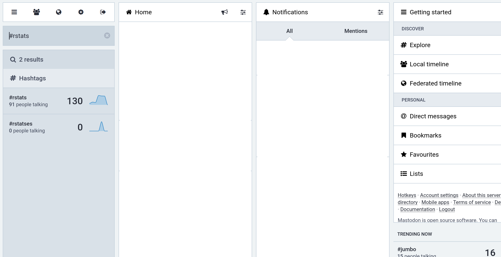
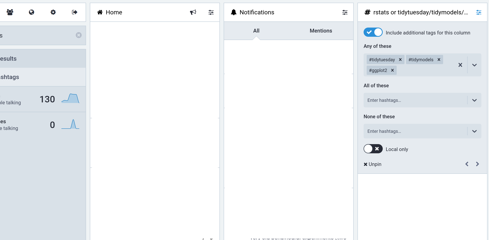

![]()
Hello.
What is Mastodon? What is the fediverse?
Which server should I sign up on?
Can you tell me about the web interface?
For the purposes of this post I’ll assume you’re looking to get started by using the web interface. There are also apps you can download onto your phone (e.g., I’m using the standard Mastodon app on iOS), but I’m trying not to complicate things!
My main account is @djnavarro@fosstodon.org. In my browser I’m logged in already, so when I navigate to https://fosstodon.org I’m automatically shown the logged in view. There are two versions you can choose between, the “standard view” and the “advanced view”.
The “standard view” interface looks pretty similar to what you’d expect from twitter. On the left you can write posts, in the middle there’s a column where your feed is shown (I’ve edited these screenshots to remove the actual posts, just so we can focus on interface), and on the right sidebar there’s a menu with various options you can click on:
In a lot of cases this view will work well for you, but if you want to track hashtags – more on that later because hashtags are important! – you might find it useful to switch to the “advanced view”. To switch, click on the “Preferences” option on the right hand side, which brings up a preferences screen that looks like this:

Click on the “Enable advanced web interface” option, like I’ve done here, and click save changes. When you then go back to Mastodon, the interface will have changed to one that looks very similar to the Tweetdeck interface that a lot of folks on Twitter use:
 There are more columns. As before, the left column shows an aread where you can compose posts, and on the right column a menu with options is shown. Posts will appear in the “Home” column. Mentions, favourites (similar to Twitter “likes”), and boosts (similar to Twitter retweets), will be shown in the “Notifications” column.
There are more columns. As before, the left column shows an aread where you can compose posts, and on the right column a menu with options is shown. Posts will appear in the “Home” column. Mentions, favourites (similar to Twitter “likes”), and boosts (similar to Twitter retweets), will be shown in the “Notifications” column.
How do I find interesting posts and people?
How do I make a post?
How do I tag someone in a post?
Tracking hashtags
So you want to follow a hashtag? Good news, you can! From what I can tell, this is something where your options might be a little different on each server. For instance, on mastodon.social you can follow a hashtag directly in the standard view: when you search for a hashtag there will be a little “follow” icon that appears that you can click on (see this comment on fedi.tips). When you do that, posts with that hashtag will appear in your feed. However, not every server implements this: fosstodon.org doesn’t do that right now.
So let’s go with a method that seems to work everywhere I’ve looked.
https://mastodon.nz/@thoughtfulnz/109278289508807509
You’ll need to be in “advanced view” (the one with lots of columns, see earlier) to do this. You can customise your view by adding columns corresponding to hashtags you want to follow. For example, let’s say I want to follow the “#rstats” hashtag. The first thing I’d do is type “#rstats” into the search bar (in the top left corner). The results will be shown directly below the search bar, like this:

These are clickable links. When I click on the “#rstats” hashtag in the results, a new column appears… containing a chronological feed that consists of posts tagged with “#rstats”:

Again, in real life this won’t be empty: you’ll actually see the posts! You are now tracking “#rstats” on Mastodon, albeit temporarily. Suppose you want to make sure the column sticks around every time you open Mastodon. We can “pin” the column in place. To do that, I click on the little “settings” icon at the top right of the “#rstats” column. It’s the one on the far right here:
When you do that, you will see a small menu that gives you the option to pin! Easy.
We can make our “#rstats” column more useful. For example, there are several hashtags I want to bundle together when following R content: “#TidyTuesday”, “#TidyModels”, and “#ggplot2”. I don’t want a separate column for each one, I want to group them into a single feed. Click on that little settings button again. Now you’ll see a richer menu:
One of the options there is “include additional tags”. When I click on that, I can type in the other hashtags to track:
 And now we are done! I have a feed that tracks R related content on Mastodon.
Why are content warnings everywhere?
https://robot.rodeo/@mike/109270985467672999
How do I add a content warning?
How can I make threads that will work nicely?
https://scicomm.xyz/@quokka/109274732847484553
Why can’t I “quote” a post?
https://fedi.tips/how-to-use-mastodon-and-the-fediverse-basic-tips/#WhyCantIQuoteOtherPostsInMastodon
Are Mastodon favourites the same as Twitter likes?
Almost, but not entirely. On twitter, we’ve all become accustomed to the obnoxious fact that “likes” do two different things: they send a signal to the person that you liked what they said (i.e., what they’re supposed to do!), but whenever you do that it will trigger a stochastic retweet: some proportion of people who follow you will also see that tweet because you liked it. This is annoying because very often you actually enjoy a thing but don’t think it is appropriate to retweet.
Twitter doesn’t respect your boundaries. Mastodon does. Favourites don’t trigger anything. The only thing they do is tell the person that you liked their post. So… you should use favourites a lot! Show people you appreciate them! And if you think this is something your followers would appreciate seeing, then boost it too! The key thing is that on Mastodon the two functions are separated cleanly…
What are the local and federated timelines?
How do I move my account to a new server?
In hindsight, I realise I missed a step…
Step 0: Prepare the way
- It’s probably a good idea to post from your old account that you’re about to initiate a move. That way people will not be surprised when they find themselves following a new account
- Set up your avatar, bio, etc on the new account using the same (or similar) images and descriptions on the old account: anyone who clicks through on the new account will see that it’s you!
Step 1: Import and export from the old account
- Click on the “preferences” options
- Within preferences, select “import and export”
- On the data export page, you’ll see a list of possible csv files you can download. Download the ones you want, especially the “follows” csv.
Step 2: Set up alias on the new account
- Click on the “preferences” options
- Within preferences, select “account”
- On the account settings page, scroll down to the bottom to the section called “moving from a different account” and click on the link “create an account alias”
- On the account aliases page, specify the handle of your old account: e.g., djnavarro@mastodon.social in my case and click “create alias”
You’re done: the alias is set up. You may have to wait a while for this to propagate to the old account. When I moved I had to wait overnight because mastodon.social was running very slowly due to the massive spike of new users from twitter.
Step 3: Initiate the move from the old account
- Click on the “preferences” options
- Within preferences, select “account”
- On the account settings page, scroll down to the bottom to the section called “moving to a different account” and click on the link “configure it here”
- On the moving accounts page, type the handle of the new account (in my case djnavarro@fosstodon.org) and enter the password for your old account to confirm. Click “move followers”.
This will initiate the move. All your followers at the old account will automatically unfollow the old account and then follow the new one. It’ll take a little while and it might happen in bursts.
Step 4: Import your follos at the new account
- Click on the “preferences” options
- Within preferences, select “import and export”
- On the menu on the left, click the “import” submenu
- On the import screen, select the import type (e.g., “following list”), click on “browse” to select the csv file you exported earlier, and then click “upload”.
Your new account will now automatically follow all the accounts your old account followed.
What do the privacy options mean for Mastodon?
Etiquette on alt-text?
On twitter, you’ve probably found that there’s some pressure and expectation to supply alt-text for your images. The norm is much stronger on Mastodon.
https://mastodon.art/@Curator/109279035107793247
Etiquette on cross-posting from twitter?
What’s the best place to look?
https://fedi.tips/
https://mastodon.nz/@explorergrace/109272759764872091
Reuse
Citation
@online{navarro2022,
author = {Danielle Navarro},
editor = {},
title = {Everything {I} Know about {Mastodon}},
date = {2022-11-03},
url = {https://blog.djnavarro.net/posts/2022-11-03_what-i-know-about-mastodon},
langid = {en}
}